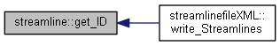
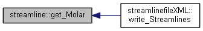
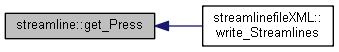
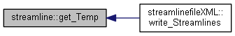
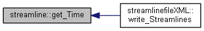
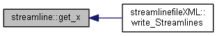
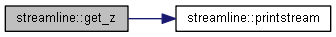
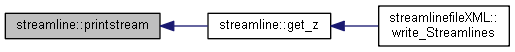

#include <streamline.h>
Collaboration diagram for streamline:

Public Member Functions | |
| streamline () | |
| Default Constructor. More... | |
| streamline (int _ID, std::vector< double > _T, std::vector< double > _P, std::vector< double > _Time, std::list< Species > _species, std::vector< double > _Molar_Conc, std::vector< double > _X, std::vector< double > _Y, std::vector< double > _Z) | |
| Parametric Constructor. More... | |
| std::vector< double > | get_Temp () const |
| Return Temperature [K] array. More... | |
| std::vector< double > | get_Press () const |
| Return Pressure [Pa] array. More... | |
| std::vector< double > & | get_Time () |
| Return Times [sec]. More... | |
| std::vector< double > | get_Molar () const |
| Return Molar Concentration for each species [sec]. More... | |
| std::list< Species > | get_Species () const |
| Return Species. More... | |
| int | get_ID () const |
| Return Streamline ID. More... | |
| std::vector< double > | get_x () const |
| Return X Positions. More... | |
| std::vector< double > | get_y () const |
| Return Y Positions. More... | |
| std::vector< double > | get_z () const |
| Return Z Positions. More... | |
| void | printstream () |
| Print Streamline. More... | |
Constructor & Destructor Documentation
§ streamline() [1/2]
| streamline::streamline | ( | ) |
Default Constructor.
§ streamline() [2/2]
| streamline::streamline | ( | int | _ID, |
| std::vector< double > | _T, | ||
| std::vector< double > | _P, | ||
| std::vector< double > | _Time, | ||
| std::list< Species > | _species, | ||
| std::vector< double > | _Molar_Conc, | ||
| std::vector< double > | _X, | ||
| std::vector< double > | _Y, | ||
| std::vector< double > | _Z | ||
| ) |
Parametric Constructor.
Member Function Documentation
§ get_ID()
|
inline |
Return Streamline ID.
Here is the caller graph for this function:

§ get_Molar()
|
inline |
Return Molar Concentration for each species [sec].
Here is the caller graph for this function:

§ get_Press()
|
inline |
Return Pressure [Pa] array.
Here is the caller graph for this function:

§ get_Species()
|
inline |
§ get_Temp()
|
inline |
Return Temperature [K] array.
Here is the caller graph for this function:

§ get_Time()
|
inline |
Return Times [sec].
Here is the caller graph for this function:

§ get_x()
|
inline |
Return X Positions.
Here is the caller graph for this function:

§ get_y()
|
inline |
Return Y Positions.
Here is the caller graph for this function:
§ get_z()
|
inline |
Return Z Positions.
Here is the call graph for this function:

Here is the caller graph for this function:
§ printstream()
| void streamline::printstream | ( | ) |
Print Streamline.
Here is the caller graph for this function:

The documentation for this class was generated from the following files:
- NanoDome/Code/Fluent_Link/fluent_link_deliverable/streamline.h
- NanoDome/Code/Fluent_Link/fluent_link_deliverable/streamline.cpp